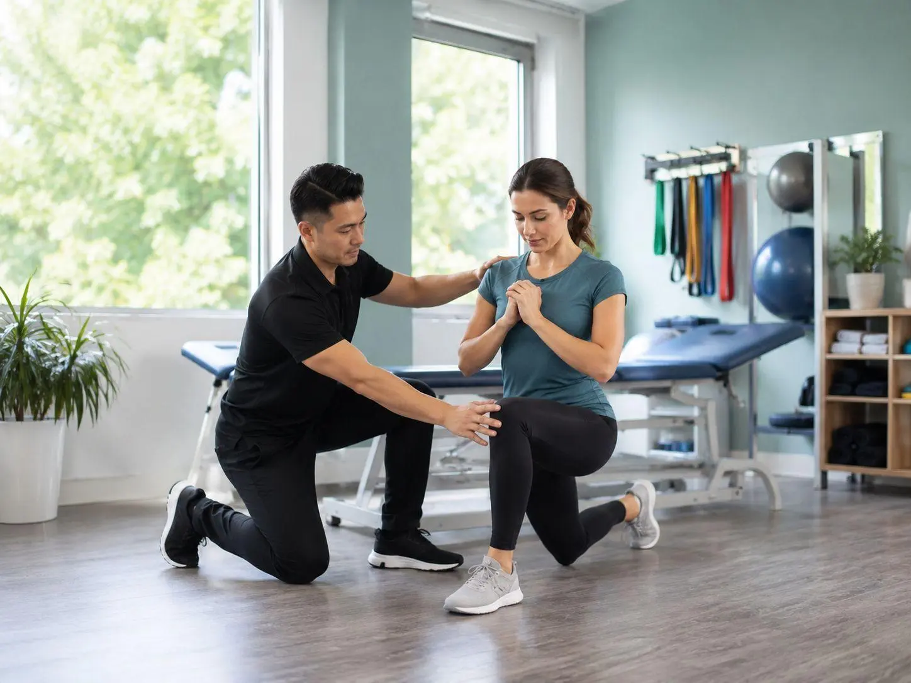
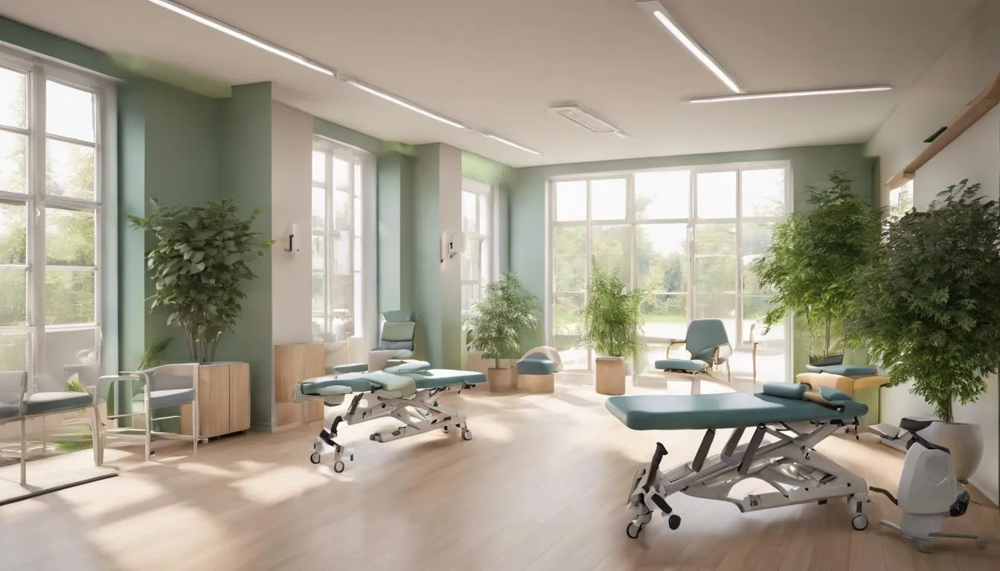
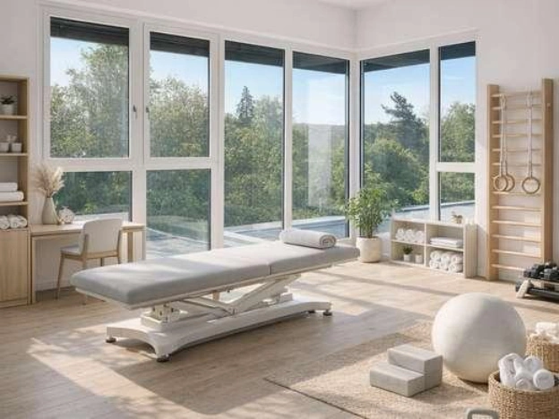
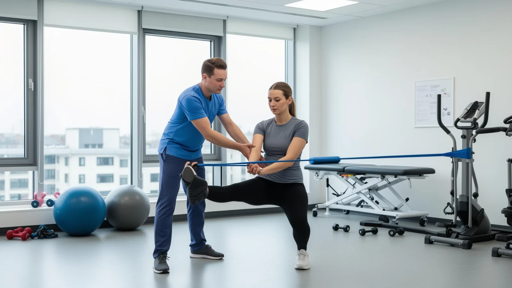
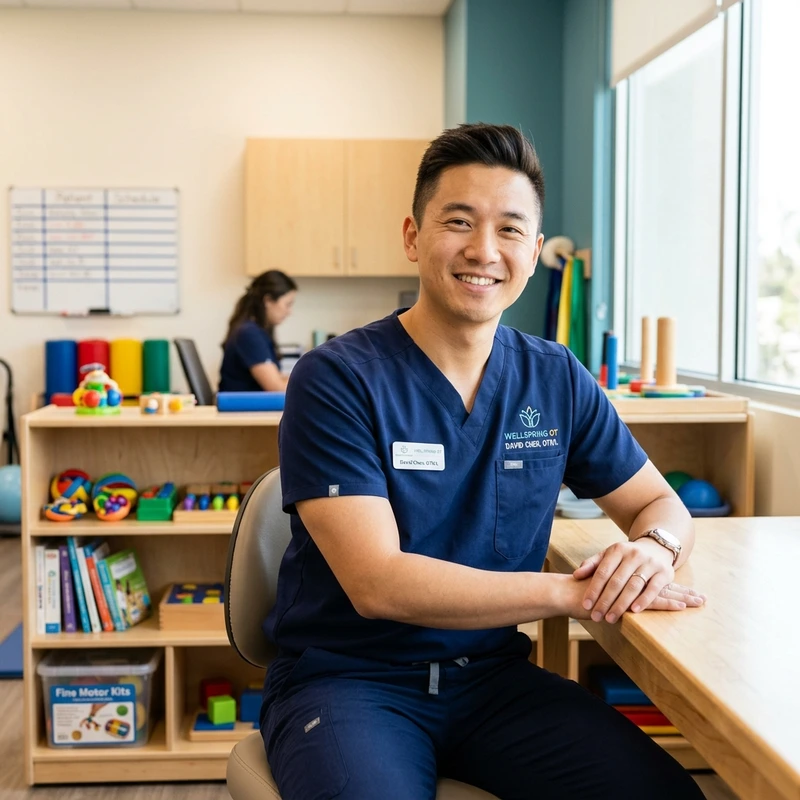
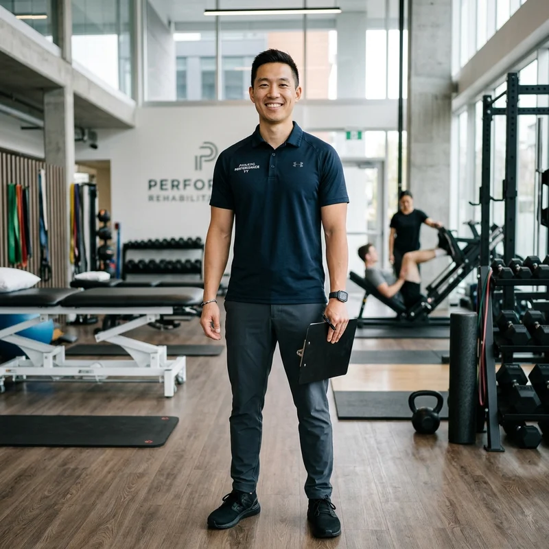
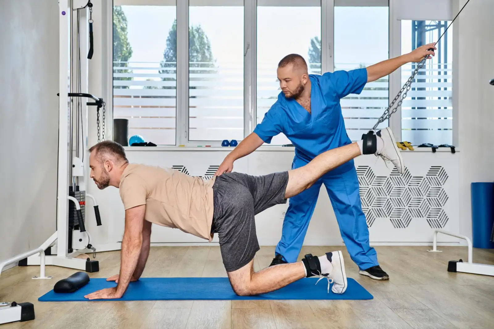
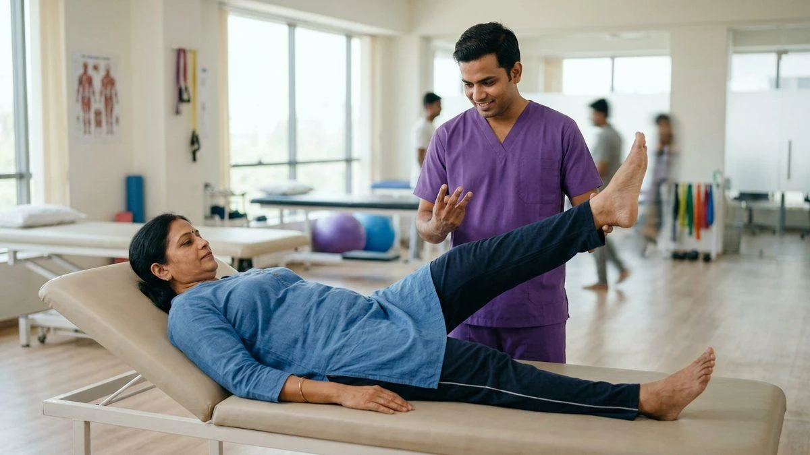

Every Step Forward Matters.
Empowering your recovery with evidence-based multidisciplinary therapy, tailored physical rehabilitation, and dignified support designed to help you regain independence.
Rehabilitation Programs
Coordinated therapies tailored to your unique anatomical, neurological, and lifestyle goals. Each pathway is guided by dedicated clinical specialists.

Physical Rehabilitation
Focused on restoring joint mobility, muscular balance, balance control, and pain mitigation following surgical procedures or musculoskeletal injuries.

Neurological Rehabilitation
Specialized neuro-plasticity protocols for stroke recovery, Parkinson's disease, brain injury, and spinal cord injury to rebuild nerve-muscle pathways.

Occupational Therapy
Rebuilding fine motor skills, self-care routines, ergonomic modifications, and home adaptations to enable safe, dignified daily independence.

Speech & Language Therapy
Targeted therapy for speech articulation, aphasia recovery, cognitive-communication challenges, and swallowing disorders (dysphagia).

Sports Injury Rehabilitation
Comprehensive biomechanical analysis, ligamentous recovery (ACL/MCL), rotator cuff restoration, and progressive return-to-sport testing.
Meet Our Specialists
Our board-certified clinicians combine years of specialized clinical hospital training with heartfelt compassion, dedicated to your holistic wellbeing.

Dr. Sarah Jenkins
14+ years advancing stroke recovery protocols and vestibular therapies. Fellow of the American Board of Physical Therapy Specialties.

Dr. Michael Chen
Specializes in upper extremity rehabilitation, assistive adaptive technology integration, and personalized ergonomic independence.
Elena Rostova
Expert in adult aphasia rehabilitation, cognitive-linguistic retraining, and evidence-based dysphagia therapies.

Dr. David Vance
Former collegiate clinical athletic consultant specializing in complex knee/shoulder reconstruction rehabilitation and kinetic chain balancing.
Your Recovery Journey
A transparent, phased rehabilitation pathway centered on your dignity, medical safety, and steady milestone achievement.
Initial Assessment
Comprehensive medical history review, diagnostic mobility screenings, range-of-motion assessments, and lifestyle baseline checks.
Day 1Personalized Plan
Collaborative roadmap co-created with your therapists. Clear milestone markers, therapy frequency, and targeted functional goals.
Week 1Guided Sessions
One-on-one therapy utilizing modern equipment, manual techniques, therapeutic exercises, and adaptive training modalities.
Weeks 2–12Progress Review
Continuous assessment adjustments, objective metrics tracking, home exercise integration, and long-term autonomy planning.
OngoingOur Facilities
Designed from the ground up for comfort, safety, and physical accessibility. Every room supports calming, dignified therapy.

Active Rehabilitation Gym
Equipped with bodyweight-supported treadmills, functional trainers, balance plates, and adaptive resistance gear designed for all mobility levels.

Welcoming Patient Lounges
Step-free thresholds, wide corridors, restful seating, and calming acoustic dampening to ensure a peaceful atmosphere before and after sessions.

Private Treatment Suites
Acoustically insulated consultation rooms for speech therapy, manual muscle treatments, diagnostic ultrasound, and confidential caregiver discussions.

Care Tailored to Your Unique Story
No two injuries or neurological paths are identical. We don't believe in assembly-line healthcare.
Your care begins with identifying what truly matters to you—whether that is holding your grandchild, returning to athletic competition, or regaining independence in your kitchen. Our multidisciplinary specialists work together, continually recalibrating exercises as your strength and confidence build.
- Objective Biomechanical Baselines: Precise initial mobility measurements.
- Paced Adaptation: Progression dictated by your tolerance and tissue healing rates.
- Integrated Team Conferences: Weekly collaborative reviews between physical, occupational, and medical leads.
Empowering Families & Caregivers
Recovery happens both in the clinic and at home. We actively educate and support the loved ones walking this path alongside you.
Our dedicated family education sessions teach safe transfer techniques, home accessibility adjustments, emotional burnout prevention, and encouraging communication strategies that nurture independence.

Tracking Your Progress
Clear visibility into every milestone. We track tangible indicators so you and your care team can celebrate incremental victories without false clinical promises.
Upper Limb Mobility Milestone Track
*Sample demonstration tracking. Clinical outcomes vary based on individual physiological responses and diagnosed conditions.
Patient Stories
Dignified, authentic journeys shared with consent. Real perseverance through dedicated rehabilitation guidance.
Anand R.
Post-Stroke Neurological Program • 9 Months"When I first arrived at STACKLY, holding a spoon felt impossible. Dr. Sarah Jenkins and the team never rushed me. They built tiny exercises into my daily routine. Today, I can write again and walk through our garden unassisted."
Pooja K.
ACL Reconstruction Athlete • 6 Months"Dr. Vance understood the mental anxiety of returning to the badminton court after knee surgery. The balance boards and strength progression gave me the confidence that my knee was structurally ready."
Meenakshi V.
Caregiver for Father (Parkinson's Care)"The caregiver training sessions gave me practical techniques to assist my father safely without straining my back. STACKLY treats the whole family with respect and patience."
Why Choose STACKLY Rehabilitation
A standard of clinical excellence anchored in ethical transparency, continuous communication, and uncompromised dignity.
Coordinated Team Care
Your physical, occupational, and speech therapists collaborate directly, preventing fragmented advice or conflicting protocols.
Board-Certified Clinicians
All specialists hold active clinical credentials and engage in mandatory continuing neuro-rehabilitation medical education.
100% Accessible Facilities
Zero-threshold entrances, adaptive changing suites, wide ramps, and sensory-friendly lighting across all regional branch locations.
Transparent Dialogue
Honest clinical assessments, realistic expectations without false guarantees, and regular consultations with your primary physician.
Your Next Step Starts Here.
Whether you are beginning recovery from an acute injury, managing a neurological condition, or seeking to restore movement freedom, our compassionate team is ready to guide you.
Initial assessments include an in-depth clinical mobility evaluation and personalized consultation.